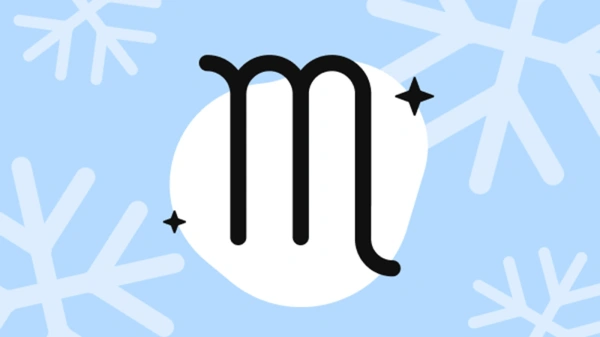

Южнокорейский ученый доказал отсутствие связи между гороскопом и судьбой. По мнению специалиста, знак зодиака не влияет и на характер человека: 03 июня 2024, 17:11 Ученый из Университета Кемён (Южная Корея) и Центра науки о благополучии Мельбурнского университета (Австралия) Мохсен Джошанлу научно доказал несостоятельность астрологии. По его мнению, знак зодиака, под которым родился человек, не влияет на его судьбу и характер. Исследование опубликовано в швейцарском научном журнале Kyklos, краткую выдержку представил портал Psy Post. Джошанлу проанализировал данные Общего социального опроса США, который проводят с 1972 года. Он взял для исследования четыре последние волны опроса за 2016, 2018, 2021 и 2022 годы — суммарно это данные 12 791 участника (средний возраст — 50 лет, около 55% — женщины).Благополучие респондентов оценивали по восьми ключевым параметрам: общее ощущение себя несчастным, симптомы депрессии, уровень стресса, неудовлетворенность работой и финансовым положением, чувство «серости» жизни, самооценка здоровья и неблагополучия в браке. Ученый применил комбинацию статистических методов, включая анализ ковариации (ANCOVA). Он позволяет сравнивать средние значения по группам, контролируя влияние других переменных (возраст, пол и образование). Для семи из восьми показателей не было выявлено статистически значимого влияния знаков зодиака. Исключением стал показатель «неудовлетворенность финансовым положением». Однако его величина была незначительной, то есть практическая значимость была минимальной. По словам ученого, такие итоги подчеркивают необходимость чаще говорить о несостоятельности астрологии как науки. Для этого нужно развивать научную грамотность и критическое мышление людей и учить их использовать рациональные инструменты для принятия жизненно важных решений, а не полагаться на гороскопы.
«Год кардинальных перемен». Гороскоп для Водолеев на 2024-й от нейросети. GPT-4 рассказала, что ждет представителей знака зодиака в новом году 18 декабря 2023, 13:35 2023 год был непростым: неоднократно случались магнитные бури, различные катаклизмы — от извержений вулканов до наводнений и штормов. Следующий же будет високосным, что может сулить некоторые трудности, но пройдет под знаком Зеленого Деревянного Дракона (по восточному календарю), который символизирует власть, благородство, честь, удачу и успех. Для каждого из 12 знаков зодиака РБК Life составил астрологический прогноз на 2024 год при помощи чат-бота, основанного на нейросети GPT-4. Дорогие Водолеи, 2024 год будет годом кардинальных перемен и возможностей для вас. Вы столкнетесь со множеством вызовов, но это откроет для вас новые горизонты и возможности. В начале года вы можете чувствовать себя неуверенно, но не паникуйте. Вам придется проявить максимум упорства и настойчивости, чтобы достичь успеха, но не забывайте о том, что все очень быстро меняется. К середине года высока вероятность получить хорошее предложение по новой работе или проекту, который изменит вашу жизнь. В конце года вы достигнете значительных результатов и будете чувствовать уверенность в своих способностях. Вас ждут приятные события в личной жизни, которые принесут радость и удовлетворение. Будьте открыты для новых знакомств и возможностей. В целом, 2024 год будет годом роста и развития для Водолеев. Будьте готовы к изменениям и не бойтесь рисковать. Ваша интуиция и творческий подход помогут вам преодолеть любые трудности и достичь успеха во всех сферах жизни. Откройте свой ум и сердце для новых возможностей, и вы обязательно добьетесь успеха!
«Вы в центре внимания». Гороскоп для Скорпионов на 2024 год от нейросети. GPT-4 рассказала, что ждет представителей знака зодиака в новом году 18 декабря 2023, 13:36  2023 год был непростым: неоднократно случались магнитные бури, различные катаклизмы — от извержений вулканов до наводнений и штормов. Следующий же будет високосным, что может сулить некоторые трудности, но пройдет под знаком Зеленого Деревянного Дракона (по восточному календарю), который символизирует власть, благородство, честь, удачу и успех. Для каждого из 12 знаков зодиака РБК Life составил астрологический прогноз на 2024 год при помощи чат-бота, основанного на нейросети GPT-4. Дорогие Скорпионы, добро пожаловать в 2024 год, который принесет вам много интересных событий и эмоциональных вызовов! Вас ждут перемены, возможности для роста и глубокого самоосознания. Подготовьтесь к тому, чтобы сиять своими талантами и покорять новые горизонты. 2024 год станет олицетворением истинной страсти: будут глубинные эмоции, а вы — в центре внимания. Вы будете притягивать внимание своей магнетической личностью, и вам предоставится возможность встретить душевного партнера. На работе вы будете демонстрировать яркие идеи, которые помогут вам прорваться через любые преграды. Вам предстоит проявить свою силу, решительность и целеустремленность, чтобы достичь своих целей. Будьте готовы к переменам, новым проектам и возможностям для профессионального роста. Найдите способы управления возникшим стрессом. И готовьтесь к захватывающему и трансформирующему 2024 году. Не бойтесь идти вперед.